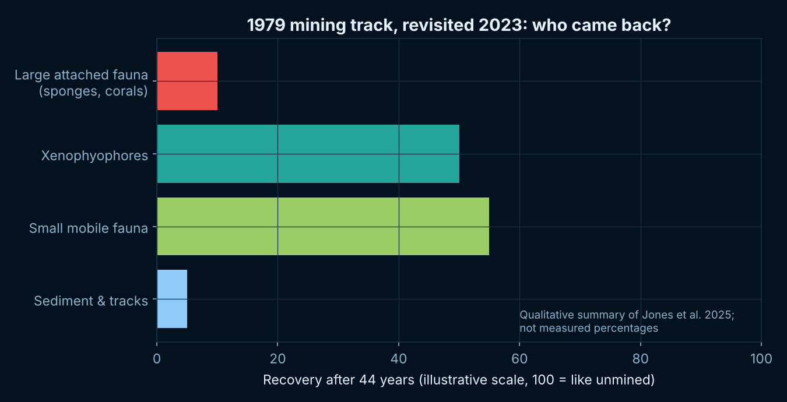

Deep-Sea Mining: Science, Law and the 2026 State of Play
Nodules, crusts and vent sulfides; the ISA Mining Code that still is not finished; the US permit route; and the evidence each side cites.
- Polymetallic nodules on abyssal plains (nickel, cobalt, copper, manganese): see Polymetallic nodules.
- Cobalt-rich ferromanganese crusts on seamount flanks: see Seamounts.
- Seafloor massive sulfides at vents (copper, zinc, gold, silver): see Hydrothermal vents.

How nodule collection would work#
A tracked collector vehicle crawls the seafloor, sucking up the top layer of sediment and nodules. A riser pipe lifts the slurry to a ship, and the sediment-laden water is discharged back into the ocean. The main impacts are habitat removal (nodules and the animals attached to them), sediment plumes near the bottom and at the discharge depth, noise and light, and compaction of the seabed.
The policy detail below is kept current in the hub’s governance notes.
Status date: November 15, 2026. This is policy context for the science, not a position for or against mining. Arguments on both sides are summarised as their proponents make them.
1. International Seabed Authority (ISA)#
- Under UNCLOS, the ISA regulates mineral activity in “the Area” (seabed beyond national jurisdiction). Its Mining Code (exploitation regulations) is still unfinished.
- 31st session:
- Part I Council: 9–19 March 2026.
- Part II Council: 13–24 July 2026. More than 200 delegates attended, from 33 of the 36 Council members.
- Assembly: 27–31 July 2026.
- Outcome: on 24 July the Council agreed a roadmap of remaining work but did not adopt the Mining Code. No exploitation was approved.
- Next: 32nd session in 2027.
2. United States route (NOAA / DSHMRA)#
- NOAA’s final rule creating a consolidated exploration-licence + commercial-recovery-permit process took effect on 21 Jan 2026. This followed the April 2025 executive order on offshore minerals.
- TMC announced its consolidated filing on 22 Jan 2026 (NOAA records the application as submitted on 6 Feb 2026). It covers ~65,000 km² of the Clarion-Clipperton Zone (up from ~25,000 km² in its April 2025 application).
- NOAA found the application in substantial compliance (Mar 2026), then full compliance (reported May 2026). It opened public comment and held a virtual hearing on 13 Oct 2026.
- Next: if NOAA certifies the application, an Environmental Impact Statement follows, with more public comment. TMC says it expects a permit before the end of Q1 2027.
- Why it matters: this is a national route that runs parallel to the ISA. Many states argue it conflicts with UNCLOS; the US is not a party to UNCLOS.
3. High Seas Treaty (BBNJ Agreement)#
- Adopted 19 June 2023. The 60th ratification came on 19 Sep 2025 (Morocco), and it entered into force 17 Jan 2026. There were 86 parties by mid-March 2026.
- Tools: high-seas marine protected areas, environmental impact assessments, benefit-sharing from marine genetic resources, and capacity building.
- COP1 must meet within a year of entry into force (expected ~January 2027). Belgium, Chile and China are bidding to host the secretariat.
- How it interacts with the ISA on seabed mining is still being worked out. The ISA Council deferred a formal BBNJ-cooperation decision.
4. The evidence base both sides cite#
| Evidence | What it found | Cited by |
|---|---|---|
| Jones et al. 2025, Nature (1979 test track, revisited 2023) | Tracks and an 8 m cleared strip still sharp after 44 years. Many animals still reduced; some small mobile fauna and xenophyophores returning; large attached fauna (sponges, corals) still rare. Food patchier in tracks. | Moratorium advocates (slow recovery) and industry (some recolonisation) |
| Sweetman et al. 2024, Nature Geoscience (“dark oxygen”) | Benthic chambers saw O₂ rising over ~2 days on nodule fields. Nodule surfaces showed up to 0.95 V, and the authors propose seawater electrolysis. | Moratorium advocates (unknown ecosystem function). TMC disputes the methods, e.g. trapped bubbles. |
| Bell et al. 2025, Sci. Adv. | ≤0.001% of the deep seafloor ever imaged | Precautionary arguments: baseline knowledge is thin |
| Ocean Census 2026 | 1,121 new species in one year, many deep | Biodiversity is largely undescribed |
| TMC baseline + pilot collection test | Industry environmental baseline and the first integrated pilot test since the 1970s | Industry: data is sufficient to start and scale responsibly |
5. Arguments as their proponents make them#
- For proceeding (industry, some governments): nodules hold large amounts of nickel, cobalt, manganese and copper for batteries and defence. Supporters argue the land-mining footprint (deforestation, tailings) is worse. They also cite supply security, and a US regulatory track that dates back to 1980–1989 rules.
- For a moratorium or precautionary pause (dozens of states, many scientists, NGOs): recovery takes decades or more. Most species are undescribed. Sediment plumes and noise would affect wide areas. Ecosystem functions such as possible O₂ production are unknown. Unilateral permits could undermine UNCLOS.
- Open empirical gaps: plume spread at commercial scale, recovery beyond 44 years, whether dark oxygen exists and matters, and regional biodiversity baselines.
Sources#
- ISA 31st session page: https://www.isa.org.jm/sessions/31st-session-2026/
- ENB summary, Part II Council (13–31 Jul 2026): https://enb.iisd.org/international-seabed-authority-isa-council-31-2-summary
- Benchmark Minerals, Council ends without the Mining Code: https://source.benchmarkminerals.com/article/benchmark-at-the-international-seabed-authority-meeting-as-global-commercial-framework-remained-unresolved
- NOAA, review of first commercial-recovery application: https://www.noaa.gov/news-release/noaa-advances-review-of-first-ever-deep-seabed-mining-commercial-recovery-application
- TMC filing (Jan 2026): https://www.barchart.com/story/news/37171286/tmc-usa-files-first-consolidated-deep-seabed-mining-application-increasing-expected-commercial-recovery-permit-area-to-65-000-km2
- European Commission, BBNJ entry into force: https://oceans-and-fisheries.ec.europa.eu/news/high-seas-treaty-enters-force-milestone-ocean-conservation-2026-01-16_en
- ELI, BBNJ after two months (86 parties): https://www.eli.org/vibrant-environment-blog/charting-new-waters-high-seas-treaty-after-two-months
- Jones et al. 2025, doi:10.1038/s41586-025-08921-3 · NOC/NHM release: https://nhm.ac.uk/press-office/press-releases/new-study-reveals-long-term-impacts-of-deep-sea-mining-and-first3.html
- Sweetman et al. 2024, doi:10.1038/s41561-024-01480-8 · DORI follow-up: https://sams.ac.uk/science/projects/dori/